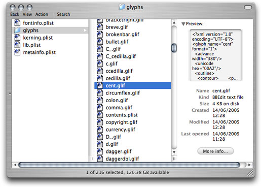
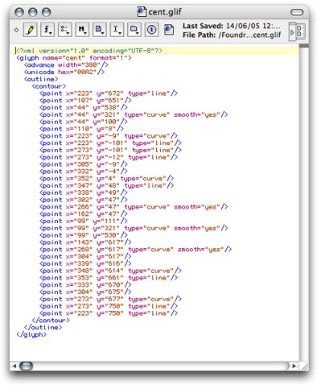

Robothon06 Conference
This is a printed version of the notes of the Robothon 06 conference. Robothon 06, Februari 16 and 17 2006, The Hague. Hosted at the Royal Academy of Arts.
About the printed version
This version of the notes is specially formatted for printing from a browser. As much as such is possible at all, it will produce reasonable results. At the time of the conference, this documentation (or an updated version) is available from www.letterror.com/code/robothon06/index.html. Some of the material will be added to the robofab documentation which can be found at www.robofab.com but probably not immediately after the conference. The online version has working links and cross references to other sources of documentation.
Thanks:
KABK, Royal Academy of Arts: www.kabk.nl for hosting and support.
House Industries: www.houseind.com
FontShop International: www.fontshop.com
Type Supply: typesupply.com
LettError: letterror.com
Type-Invaders: type-invaders.com
Buro Petr van Blokland: petr.com
The 2005-2006 class of Type]Media.
Version
This version was generated on Mon Nov 19 20:59:58 2007.
Contents
- Editors
- Font and Info objects
- Glyph and Pen objects
- Kerning and glyph building
- Scripting and Interpolation
- Scripting and production
- Scripting and NoneLab
Python, RoboFab, FontLab, Editors

Scripting?
These talks are about scripting. The term scripting is loosely defined as "writing small programs" without making it sound as difficult or complicated as "programming". Scripting is programming of course, but you don't have to tell anyone. You're using a programming language, Python, to write a script (or whatever you want to call it), which is then acted out by the Python interpreter. This is a program which will try to follow your instructions, giving feedback when it runs into problems or finishing the job when it doesn't. Running into problems is not something to be afraid of, Python does it very politely with a traceback, Python's way of reporting what went wrong and roughly where it the code it happened. We'll see a lot of these and we'll learn how to read these reports and understand what went wrong.
Why?
Scripting is not type design. Or perhaps better: scripting is everything but typedesign. Scripts won't help you find ideas or draw a better curve. But it might help you make simple tools for things you need to do often. Just like anything, it will get better with some experience, but even a badly written, simple script can save you lots of time. You don't have to be (or become) a professional programmer to make it a useful skill.
Where
Python is a modern, open source, programming language which is relatively easy to work with. There are Pythons for all operating systems and it has many developers building many different tools for it. It is not just for fonts and glyphs, there are networking and scientific tools, games, web applications. Years ago RoboFog introduced Python to make tools for typedesign and the idea stuck. Now there is a range of type applications that use Python: FontLab, the Adobe FDK, MetricsMachine, RoboFab. Learning Python means you can use your skills in more than one application.
There are several places where you can write your code. Each with their own purpose and use. We'll look at some of them:
- FontLab's Macro panel: a simple code editor in FontLab where you can edit and run scripts. The advantage is that you're in FontLab and can start work immediately, manipulating fonts and glyphs which are open. But the panel is lacking features which are useful when writing a lot of code, which is why FontLab includes the:
- FontLab with "external editor": in the FontLab preferences panel you can select another application as your python editor of choice. So when you hit the Macros button, this editor will pop up. This requires that your script is saved in a file somewhere on disk. You can use the editor to write the code, but FontLab will still run the program. FontLab doesn't actually execute the Python code, but uses a system installed interpreter.
- Python IDE, Win, Mac OSX: There are several IDE ("Integrated Development Environment") programs for Python on Mac and Windows. This means basically a Python code editor which can also run your code. Some of them offer debugging tools, module browsers or even complete interface toolkits. These IDE's are general programming tools and don't know much about type specific things. More and more code editors offer Python execution, for instance in BBEdit and Textmate on OSX you can edit your code, hit a cmd key and have the code run in the OSX Python interpreter. This is similar to the FontLab-with-external-editor option
- Command-line python interpreter: a form of Python where you write a line of code at a prompt and it is immediately executed. Useful to test simple problems, but not for anything over a couple of lines of code.
- Command-line python: use the installed command-line Python interpreter to execute files. The interpreter is called with the filename as an argument
python myCode.py
..does stuf..
Objects
Perhaps the most useful invention in programming since the paper-punch card is called object oriented programming. The term is used to describe a way of programming in which the data you're working on, and the code which belongs to that data are kept together, much like a person holding a handful of balloons on strings, in a single object, the cluster of balloons. This may sound a bit abstract. But it's a way to keep all the code and data sorted in a useful way. Otherwise there will be too much stuff very quickly. More terminology:
- attributes: the things an object knows about, its data or value. An object's data is stored in its attributes.
- methods: the things an object can do. The code to manipulate an object, its functions.
Risking an example: an object of the class car has an attribute color (blue) and a method drive (slow). Big objects are usually split up into smaller, more specific objects. For instance, a Font object offers access to Glyph objects. The way the various objects relate, wich object contains what etc. — the way something is abstracted — is called an object model. A map of the object model used in RoboFab is in the Fab docs. An object model is also called API for Application Programming Interface.
FontLab objects? RoboFab objects? Are there different flavors of objects? doesn't that confuse things? FontLab has its own object model. There are FontLab Font objects and FontLab Glyph objects. But these objects are relatively low-level, that means that while using these objects, you have to keep track of a lot of things yourself and understand some FontLab peculiarities. This makes it difficult to write code efficiently. RoboFab is a layer of objects built on top of the FontLab objects, making it a lot easier to work with the data, fewer things to memorise and that means faster development. FontLab now comes bundled with RoboFab. In this conference we focus mainly on the RoboFab objects, but for some things the FontLab objects are needed.
Back to Python. Objects, attributes and methods follow the dot separated syntax which is a handy way to clearly state what method or attribute you want to talk to. Other programming languages use dot syntax as well, for instance javascript or php.
# attribute
someObject.someAttribute
someObject.anotherAttribute
font.path
glyph.width
# method
someObject.someMethod(aParameter)
someObject.anotherMethod()
font.generate()
glyph.clear()
See how the dot connects the names? But this can go deeper than one level as well. Sometimes objects contain other objects, which in turn can have.. etc. Dont' worry about getting lost, this is why there is documentation.
# attribute
someObject.someOtherObject.theOtherObjectsAttribute
font.info.fullName
font.info.familyName
# method
someObject.someOtherObject.theOtherObjectsMethod(aParameter)
font.kerning.update()
font.info.autoNaming()
Did you notice some lines has parentheses after them, and others don't? Writing ( ) means you want to use the method and execute it. In Python terms: the method is called.
# a method but not called, you're looking at
# the python object which contains the method.
font.update
# but calling a method is more useful,
# it means: take this code and run it.
font.update()
Names of variables and methods
In Robofab we have a couple of conventions for naming classes, attributes, methods and functions. These make it easier to predict what something is called and that means fewer trips to the documentation. This is what we're talking about:
- camelCase: this means that when a name is made up from several words, eachAdditionalWordStartsWithACap. Examples: glyphName, kernTable, groupList, fontTools.
- class names always start with an uppercase, then camelCase. Examples: RFont(), RGlyph, RKerning().
- attribute and method names always start with a lowercase, then camelCase. Examples: kerning.importAFM(), glyph.drawPoints()
Note: these are our conventions, we do it this way because we prefer it. But that does not mean that Python requires it, as long as your names are legal Python you can write whatever you want. It's just useful to stick to a predictable method one way or the other. Please look at the standard Python documentation for a full description of the language. Some rules about legal Python names:
- Names can be arbitrarily long.
- Names can contain letters and numbers.
- The first character has to be a letter.
- Names can contain upper and lower case letters.
- Upper and lower case letters are different.
- bruce and Bruce are different variable names
- The underscore character,_, is legal. my_name
Installing RoboFab
Installing RoboFab is usually straightforward. There are quite a few combinations of operating system, FontLab version and Python version possible, some with their own pecularities. There's not much we can do about that, you just have to get it sorted.
- Some notes on installing RoboFab for FontLab Studio 5, on the LettError wiki.
- More installation notes in the RoboFab documentation
Documentation
There is a lot of documentation available on the internet. When writing code, google is your best friend - there is almost always someone else who has dealt with or written about the same problem. Reading the documentation is always a good idea. Looking at code snippets is useful too because it will explain how other people have solved problems. Even if a particular bit of code doesn't do what you're looking for, it can give you ideas.
- RoboFab objects: the RoboFab API and reference.
- FontLab objects: the FontLab documentation. API and reference for the FontLab objects.
- RoboFab introduction to Scripting: RoboFab scripting intro
- How to think like a computer scientist: an introduction into learning Python. Not specifically about typedesign, but general Python programming, lists, dicts, variables, stuff like that.
- Emergency Python Basics: elsewhere on this site an short overview of some of Python's basic stuff.
Font & Info objects

Code!
So now then, you should have your editor fired up. Your RoboFab installed. Locate the output window as well.
import robofab.world
If that runs without problems you're good to go. If a new window pops up with a traceback like this it means there's something wrong with the installation.
Traceback (most recent call last):
File "<string>", line 1, in ?
ImportError: No module named robofab.world
In this documentation, stuff in the output window is indicated with a tinted background. Whenever something is printed in Python code it will end up in the output window.
Huh, import ?
Python can do a lot of different things. Some of its functionality is always available (the built-in things) but most of it is stored in seperate modules. When you want to use code from a different module, you need to import it first so that Python knows it needs to look somewhere else for objects, functions and stuff. Most of the Robofab stuff is stored in the robofab.world module. Notice that dot there? The dot syntax also works for modules and modules within modules. If you want to import a module and Python can't find it, you will get a traceback with an ImportError. You can also import specific things from another module, then you write:
from someModule import oneSpecificThing
from someModule.subModule import oneSpecificThing
from someModule import anotherSpecificThing, andAnotherThing
# and these:
import someModule
import someModule.subModule
CurrentFont()
So, suppose you have FontLab, and a font file open. Make sure it is a font you can trash if you have to, and not the single copy of the production master of your newest bestseller. How do you get started talking to that font in Python? Use CurrentFont(). This is a special function which will return an object for the font which is at the front. When there are no fonts it will return None.
from robofab.world import CurrentFont
print CurrentFont()
<RFont font for DemoFont Italic>
A Font object! We'll be using CurrentFont and that font object shortly, but first let's have a look at CurrentFont's siblings: CurrentGlyph and AllFonts.
# open a glyph in FL first!
from robofab.world import CurrentGlyph
print CurrentGlyph()
<RGlyph for DemoFont.ograve>
CurrentGlyph() returns a Glyph object for the glyph which is at the front. So this is a useful place to start if you want to write a script which manipulates a single glyph and you want an object for that glyph.
# open a couple of fonts in FL first!
from robofab.world import AllFonts
print AllFonts()
[<RFont font for MyDemoFont>,
<RFont font for AnotherFont Plain>,
<RFont font for AnotherFont Italic>]
AllFonts() returns a list with Font objects, one object for each open font. CurrentFont, CurrentGlyph and AllFonts are three very useful functions, and they all live in the robofab.world module. We'll be using them a lot.
Some Font attributes
So what are attributes of fonts objects? Let's have a look (at the documentation!).
# open a couple of fonts in FL first!
from robofab.world import CurrentFont
font = CurrentFont()
print font.path
print font.kerning
print font.info
/aFolder/anotherFolder/demoStuff/myFont.vfb
<RKerning for MyFont Plain>
<RInfo for MyFont Plain>
Hang on! that didn't print anything that looks like kerning, and what's that font.info thing? Remember that objects can contain objects? The object model splits all font related data into smaller, easier to manage pieces. So a Font object has one single Info object which in turn stores all of the naming and dimensions. Same for font.kerning, it's an object which represents all kerning data of the font. We'll get back to the kerning object later.
Some Info attributes
The Info object stores all of the font's names, key dimensions etc.
# robothon06
# getting data from the info object
from robofab.world import CurrentFont
font = CurrentFont()
# naming attributes
print font.info.familyName
print font.info.styleName
print font.info.fullName
# dimension attributes
print font.info.unitsPerEm
print font.info.ascender
print font.info.descender
MyDemo
Plain
MyDemo Plain
1000
720
-280
Almost all attributes can also be set to new values. This is when it starts getting interesting. But it also opens new ways of messing your font up.
# robothon06
# setting data in the info object
from robofab.world import CurrentFont
font = CurrentFont()
# naming attributes
font.info.familyName = "MyFamily"
print font.info.familyName
font.info.styleName = "Roman"
print font.info.styleName
font.info.fullName = font.info.familyName + '-' + font.info.styleName
print font.info.fullName
# dimension attributes
font.info.ascender = 600
print font.info.ascender
font.info.descender = -400
print font.info.descender
font.update()
MyFamily
Roman
MyFamily-Roman
600
-400
A useful method of the Info object is autoNaming(). It assumes you have entered correct data for familyName and styleName. Based on these 2 values, a bunch of variations and permutations are generated and stored in the appropriate fields. These are the basic names, no fancy OpenType stuff.
# robothon06
# get a particular glyph
from robofab.world import CurrentFont
font = CurrentFont()
font.info.familyName = "myFamilyName"
font.info.styleName = "myStyleName"
font.info.autoNaming()
print font.info.fullName
print font.info.fontName
print font.info.fondName
myFamilyName myStyleName
myFamilyName-myStyleName
myFamilyName
Getting to glyphs
We've seen CurrentGlyph and CurrentFont, but how do you we get to other glyphs in a font? A Font object contains glyphs and this is what you do to get to them:
# robothon06
# get a particular glyph
from robofab.world import CurrentFont
font = CurrentFont()
print font['A']
print font['Adieresis']
print font['two']
print font['afii12934']
<RGlyph for MyFamily-Roman.A>
<RGlyph for MyFamily-Roman.Adieresis>
<RGlyph for MyFamily-Roman.two>
<RGlyph for MyFamily-Roman.afii12934>
The Font object in this case behaves like a Python dictionary object. Between the [ square brackets ] you can ask for a glyph by its (postscript) name. In Python speak:
value = dictionary[key]
If you want to look at all glyphs in a font, one at a time, you can loop or iterate through the font. It's written like this:
# robothon06
# iteration through glyphs in a font
from robofab.world import CurrentFont
font = CurrentFont()
print "font has %d glyphs" % len(font)
for glyph in font:
print glyph
font has 201 glyphs
<RGlyph for MyFamily-Roman.aring>
<RGlyph for MyFamily-Roman.ordfeminine>
<RGlyph for MyFamily-Roman.less>
<RGlyph for MyFamily-Roman.ograve>
<RGlyph for MyFamily-Roman.V>
<RGlyph for MyFamily-Roman.dollar>
<RGlyph for MyFamily-Roman.circumflex>
..etc..
A couple of things to look for in the example above:
- len(font) shows Python's built-in len() function, which will try to count the thing its given and it will return the number. Fonts like to be counted and they respond with the number of glyphs. In this case the font has 201 glyphs.
- All the glyphs are mixed up! there is no particular order! chaos! In Python dictionaries there is no standard order in which the keys appear. It will iterate through all the glyphs though.
- Notice the indentation at the beginning of the line under for glyph in font: This is Python's way of showing that all of the code that's indented belongs to the same loop. When the code is dedented again that's where Python will continue when it is done with the loop.
When you want to be sure about the order in which the glyphs are looked at, you need to sort them first. Example:
# iteration through alphabetically sorted glyphnames
from robofab.world import CurrentFont
font = CurrentFont()
print "font has %d glyphs" % len(font)
# names is now a list of strings, the names of the glyphs
# not the glyphs themselves!
names = font.keys()
# the list of names is sorted
names.sort()
# now we iterate through the list of names
for glyphName in names:
# now we ask for the glyph with glyphName
print font[glyphName]
font has 201 glyphs
<RGlyph for MyFamily-Roman.A>
<RGlyph for MyFamily-Roman.AE>
<RGlyph for MyFamily-Roman.Aacute>
<RGlyph for MyFamily-Roman.Acircumflex>
<RGlyph for MyFamily-Roman.Adieresis>
<RGlyph for MyFamily-Roman.Agrave>
<RGlyph for MyFamily-Roman.Aring>
<RGlyph for MyFamily-Roman.Atilde>
<RGlyph for MyFamily-Roman.B>
..etc..
Glyph, Contour & Pen
Working with Glyph, Contour, Pen objects. Deep in the font live the glyphs. Inside the glyphs are contours, components. Inside a contour are segments and points!
Previous: fonts, next: kerning and metrics, building glyphs
Some Glyph attributes
In the previous talk we saw ways of getting fonts and glyph objects. Now we're going to see what Glyph objects can do for us. Glyphs are perhaps the most interesting object in the whole API. Some basic attributes of a glyph object:
# robothon06
# set basic attributes in a glyph
from robofab.world import CurrentFont
font = CurrentFont()
glyph = font['A']
glyph.width = 200
print glyph.width
glyph.leftMargin = 50
print glyph.leftMargin
glyph.rightMargin = 50
print glyph.rightMargin
glyph.unicode = 666
glyph.update()
A
812
0
0
(0, 0, 812, 600)
65
Some of these attributes can also be set, you can put new values in them. Why not all of them? For instance, the bounding box of a glyph is an attribute, it is useful information. But it depends entirely on the size of the contours in the glyph. There's no way in which you could set this attribute other than by changing the actual paths. Useful attributes you can set are things like the width, left and right margin:
# robothon06
# set basic attributes in a glyph
from robofab.world import CurrentFont
font = CurrentFont()
glyph = font['A']
glyph.width = 200
print glyph.width
glyph.leftMargin = 50
print glyph.leftMargin
glyph.rightMargin = 50
print glyph.rightMargin
glyph.unicode = 666
print glyph.unicode
glyph.update()
200
50
50
666
Notice the glyph.update() statement at the end. After setting the attributes to new values, the glyph data will be changed. But the FontLab interface will not have noticed your changes. For instance, the little preview in the font window might still show the old version. The update() method of the glyph object is a wakeup call for the application to refresh all glyph drawings with the new data. Note that it is just the representation that's being updated. The data itself was changed when the script was executed. Saving the file and opening it again will have the same effect in this respect.
Have a look at the RoboFab documentation on the Glyph object for more attributes and methods.
Some Glyph methods
# robothon06
# use some methods to transform a glyph
from robofab.world import CurrentFont
font = CurrentFont()
# ask a font for a glyph by name
glyph = font['A']
# now you have a glyph object
# make it do stuff by calling some of its methods
glyph.move((100, 75))
glyph.scale((.5, 1.5))
glyph.appendGlyph(font['B'])
glyph.removeOverlap()
glyph.correctDirection()
glyph.update()
Note: these will really screw up your glyph if you don't want it to be moved 100 units horizontally and 75 units vertically, then scaled 50% horizontally and 150% vertically. Then the glyph B is added, the overlap is removed, the path directions are corrected and finally the app is told something was changed.
getParent()
The Glyph object has a glyph.getParent() method. When called it will return the Font object the glyph belongs to. If it has one: "orphan" glyphs are objects which don't belong to any particular font like the result of a GlyphMath operation or glyph level interpolation. When there is no parent, getParent() returns None. You need to test for this result.
# robothon06
# iterate through a glyph's contours
from robofab.world import CurrentFont
font = CurrentFont()
glyph = font["A"]
print glyph.getParent()
<RFont font for SomeFont>
The stuff glyphs are made of
A glyph consists of contours, which in turn consist of points, right? If only it were that easy. There are all sorts of points conspiring to become all sorts of shapes. Bezier curves, Quadratic curves, open, closed, components. Sometimes it is just the point of view that's different. The Understanding Contours and Segments section of the RoboFab documentation has a couple of diagrams of the different ways of looking at the vectors in a glyph. Let's have a look at Contour objects first.
# robothon06
# iterate through a glyph's contours
from robofab.world import CurrentFont
font = CurrentFont()
glyph = font['A']
print "glyph has %d contours" % len(glyph)
for contour in glyph.contours:
print contour
glyph has 2 contours
<RContour for MyDemo Italic.A[0]>
<RContour for MyDemo Italic.A[1]>
So a Glyph object contains zero, one or more Contour objects. Let's see what secrets a Contour has:
# robothon06
# get a specific contour and view it
#through point, segment and bPoint structures
from robofab.world import CurrentFont
font = CurrentFont()
glyph = font['A']
contour = glyph[0]
print contour.points
print countours.segments
print contour.bPoints
[<RPoint for Plinc01 Plinc01.A[0][0]>,
<RPoint for Plinc01 Plinc01.A[0][1]>,
...
<RPoint for Plinc01 Plinc01.A[0][4]>]
[<RSegment for Plinc01 Plinc01.A[0][0]>,
<RSegment for Plinc01 Plinc01.A[0][1]>,
...
<RSegment for Plinc01 Plinc01.A[0][4]>]
[<RBPoint for unnamed_font.unnamed_glyph[7][0][0]>,
<RBPoint for unnamed_font.unnamed_glyph[7][0][1]>,
...
<RBPoint for unnamed_font.unnamed_glyph[7][0][4]>]
Let's have a look at these different attributes. In the end, they're all describing the same shape, the same actual points. It's just sorted in different ways for different purposes.
- contour.points: This is a list of all points on a contour. off-curve and on-curve points are presented as RPointobjects. Each RPoint has x, y, type and smooth attributes. On-cuve and off-curve points are treated as equals.
- contour.segments: A segment is an object which represents a series of off-curve points and finally one on-curve point. Though kind of abstract, segments are needed to deal with quadratic curves which can have several off-curves on a row.
- contour.bPoints: bPoints are objects which look more or less like the curve points you know from editing Beziers. One main on-curve point and two satellite off-curve points or bcps: an incoming one and an outgoing one. This is more or less the kind of point that was used in RoboFog code.
Again, please refer to the Understanding Contours and Segments to make sense of these things visually.
Finally, when you iterate through the contour.points, you get to see RPoint objects with familiar things like x, y, and type attributes.
# robothon06
# iterate through points
from robofab.world import CurrentFont
font = CurrentFont()
glyph = font['A']
for p in glyph[0].points:
print p.x, p.y, p.type
37 509 move
37 407 offcurve
119 325 offcurve
221 325 curve
323 325 offcurve
405 407 offcurve
405 509 curve
405 611 offcurve
323 693 offcurve
221 693 curve
119 693 offcurve
37 611 offcurve
37 509 curve
That looks interesting! Finally we're dealing with the stuff that letters are made of. You can now find the coordinates of every single point in the font, and change them if you want. But it looks very cumbersome to actually add shapes like this, all these contour objects, point objects. That's going to hurt, no? Yes. So, if you want to draw new forms there is a solution.
The Pen and Draw model
The pen/draw model is a very powerful concept, but it might seem a bit abstract to begin with. If you're interested in building filters, shape manipulating scripts, or programmatically draw glyphs, this is good to study. Otherwise, if you're here for the first time, just remember that there are ways to get paths into glyphs and that this is where you saw the examples for later reference.
Glyph objects have a draw() method which takes a Pen object as a parameter. All glyphs know how to draw and all pen objects have the same methods (see below). When draw() is called, the glyph instructs the pen to recreate the shapes using moveTo(), lineTo(), curveTo() commands. The pen/draw() model is a standardised way of getting to the point data in a glyph. It is also a standardised way of getting data into a glyph. The glyph doesn't have to know what the pen is doing with its information and the pen doesn't have to know where the glyph gets its data from. That's how we like things in the object oriented world.
There is a wide range of pen objects available for different things. Some pens just print the coordinates of a glyph. Some pens draw contours in a glyph, some manipulate the data, others can draw on screen under certain conditions.
How to get a pen object? A bunch of them are stored in the robofab/pens module, have a look in the source! But one of the first things you'll want to use a pen for is to construct paths in a glyph. A Glyph object has a glyph.getPen() method which will return the right Pen object for drawing in that glyph. Example:
# robothon06
# get a pen and draw something in the current glyph
# what will it draw? ha! run the script and find out!
from robofab.world import CurrentGlyph
g = CurrentGlyph()
myPen = g.getPen()
# myPen is a pen object of a type meant for
# constructing paths in a glyph.
# So rather than use this pen with the glyph's
# own draw() method, we're going to tell it
# to do things ourselves. (Just like DrawBot!)
print myPen
myPen.moveTo((344, 645))
myPen.lineTo((647, 261))
myPen.lineTo((662, -32))
myPen.lineTo((648, -61))
myPen.lineTo((619, -61))
myPen.lineTo((352, 54))
myPen.lineTo((72, 446))
myPen.lineTo((117, 590))
myPen.lineTo((228, 665))
myPen.closePath()
myPen.moveTo((99, 451))
myPen.lineTo((365, 74))
myPen.curveTo((359, 122), (376, 178), (420, 206))
myPen.curveTo((422, 203), (142, 579), (142, 579))
myPen.closePath()
myPen.moveTo((631, -32))
myPen.lineTo((629, 103))
myPen.curveTo((556, 111), (524, 71), (508, 20))
myPen.closePath()
g.update()
<robofab.pens.adapterPens.SegmentToPointPen instance at 0x65d2558>
The next example will show the use of a Pen object which doesn't construct any path, but rather it prints the instructions the glyph is calling to draw itself. Note: the stuff printed out by PrintingSegmentPen is python code too. You can use this snippet to convert a shape into python code, if for whatever reason you want to draw stuff programmatically. That's how the previous example was created: draw a shape in a glyph, print the draw instructions, write the rest of the code.
# robothon06
# get a pen and use it to print the coordinates
# to the output window. This is actually almost-python
# code which you can use it other scripts!
from robofab.world import CurrentFont
from robofab.pens.pointPen import PrintingSegmentPen
font = CurrentFont()
glyph = font['A']
# PrintingSegmentPen won't actually draw anything
# just print the coordinates to the output:
pen = PrintingSegmentPen()
glyph.draw(pen)
pen.moveTo((37, 509))
pen.curveTo((37, 407), (119, 325), (221, 325))
pen.curveTo((323, 325), (405, 407), (405, 509))
pen.curveTo((405, 611), (323, 693), (221, 693))
pen.curveTo((119, 693), (37, 611), (37, 509))
pen.closePath()
The following example uses a Pen to draw boxes as a simple rasteriser. Perhaps a bit overboard, but it illustrates what you can do with Pens and creating paths in RoboFab.
# robothon06
# rasterise the shape in glyph "A"
# and draw boxes in a new glyph named "A.silly"
#
from robofab.world import CurrentFont, CurrentGlyph
sourceGlyph = "a"
f = CurrentFont()
source = f[sourceGlyph]
# find out how big the shape is from the glyph.box attribute
xMin, yMin, xMax, yMax = source.box
# create a new glyph
dest = f.newGlyph(sourceGlyph+".silly")
dest.width = source.width
# get a pen to draw in the new glyph
myPen = dest.getPen()
# a function which draws a rectangle at a specified place
def drawRect(pen, x, y, size=50):
pen.moveTo((x-.5*size, y-.5*size))
pen.lineTo((x+.5*size, y-.5*size))
pen.lineTo((x+.5*size, y+.5*size))
pen.lineTo((x-.5*size, y+.5*size))
pen.closePath()
# the size of the raster unit
resolution = 30
# draw from top to bottom
yValues = range(yMin, yMax, resolution)
yValues.reverse()
# go for it!
for y in yValues:
for x in range(xMin, xMax, resolution):
# check the source glyph is white or black at x,y
if source.pointInside((x, y)):
drawRect(myPen, x, y, resolution-5)
# update for each line if you like the animation
# otherwise move the update() out of the loop
dest.update()

This is what it looks like.
A more in-depth discussion of the Pen protocol at the LettError wiki. More examples of using pens, and some samples using pens to filter letterforms in the RoboFab docs.
Another kind of pen
Well, it wouldn't be Python if there weren't at least two ways of doing things. The pen/draw() model draws on-curve points and only accepts off-curves as part of the curveTo() and qCurveTo() methods, there's no room for additional information. For instance a smooth flag or a name for a point (and there are good reasons to want to do that). That's where glyph.drawPoints() comes in handy. This method is similar to glyph.draw() but it takes a different pen, a PointPen. All points are drawn one by one. PointPens are useful when you want to exactly address all information of each point in a shape. Compare the output of this example with the previous one. It's the same shape. Chances are you won't need pointPens for some time, but if you start working with pens it is good to know they exist.
# use a point pen
from robofab.world import CurrentFont
from robofab.pens.pointPen import PrintingPointPen
font = CurrentFont()
glyph = font['A']
pen = PrintingPointPen()
glyph.drawPoints(pen)
pen.beginPath()
pen.addPoint((37, 509), segmentType='curve', smooth=True)
pen.addPoint((37, 407), **{'selected': False})
pen.addPoint((119, 325), **{'selected': False})
pen.addPoint((221, 325), segmentType='curve', smooth=True, **{'selected': 0})
pen.addPoint((323, 325), **{'selected': False})
pen.addPoint((405, 407), **{'selected': False})
pen.addPoint((405, 509), segmentType='curve', smooth=True, **{'selected': 0})
pen.addPoint((405, 611), **{'selected': False})
pen.addPoint((323, 693), **{'selected': False})
pen.addPoint((221, 693), segmentType='curve', smooth=True, **{'selected': 0})
pen.addPoint((119, 693), **{'selected': False})
pen.addPoint((37, 611), **{'selected': False})
pen.endPath()
Notice that a pointPen only has 3 methods: addPoint, beginPath and endPath.
Path manipulation
FontLab has path manipulation tools which let you remove overlap and add and subtract shapes. Remove overlap is available: glyph.removeOverlap(). Here is an example using the FontLab layer to subtract one shape from another to produce a third.
# robothon06
# Use FontLab pathfinder functionality to cut one glyph from another
from robofab.world import CurrentFont
f = CurrentFont()
base = f["A"]
cutter = f["B"]
dest = f["C"]
dest.clear()
dest.appendGlyph(base)
dest.width = base.width
dest.naked().Bsubtract(cutter.naked())
dest.update()
This example also sneakily introduces the naked() method of the glyph object. This method returns FontLab's own object for the glyph. We'll look at this in a bit more detail later on.
Kerning and building Glyphs

Kerning
All kerning data of a font is represented by the Kerning object. This object behaves like a Python dictionary: the key is a tuple of two glyph or groupnames, the dictionary value is the kern distance.
In FontLab, font.kerning should not be called repeatedly like a normal attribute. Nothing will go wrong if you do, it will just be slow. The reason for this is that font.kerning is an attribute which (under the hood) has to do a lot of work to collect the data from the underlying FontLab file. Kerning in FontLab is stored at the glyph level, so to pull it up to the RoboFab level a massive iteration must occur when the kerning object is created. This happens each time you ask for the font.kerning attribute. But there's a simple way to work with that efficiently: cache the kerning object. Like so:
# robothon06
# work with kerning 1
from robofab.world import CurrentFont
font = CurrentFont()
# now the kerning object is generated once
kerning = font.kerning
# and ready for your instructions.
print kerning
print len(kerning)
print kerning.keys()
# proceed to work with the myKerning object
# this happens in the following examples too.
<RKerning for MyFont Normal>
3141
[('F', 'L'), ('D', 'G'), ('N', 'Eacute'), ..etc.. ]
The Kerning object has some useful methods to transform and analyse the data.
# robothon06
# work with kerning 2
from robofab.world import CurrentFont
font = CurrentFont()
kerning = font.kerning
# calculate the average offset
print kerning.getAverage()
# count pairs with these glyphs
print kerning.occurrenceCount(["a", "b"])
# get the maximum values
print kerning.getExtremes()
# count the pars
print "font has %d kerning pairs" % len(kerning)
# this prints all the pairs
for (left, right), value in kerning.items():
print (left, right), value
<RKerning for MyFont Normal>
-20.5953517988
{'a': 82, 'b': 52}
(-191, 184)
font has 3141 kerning pairs
('F', 'L') -7
('D', 'G') 31
('N', 'Eacute') -34
('agrave.sc', 'z') -7
('K', 'v') -111
('Z', 'N') -15
..etc..
In the example above you see the Kerning object as attribute of a font object, then it is cached by storing it in a new variable. len(kerning) gives you the length of the kerning dictionary, the number of kern pairs. Have a look at the attributes and methods of the Kerning object here. It has some very useful methods for interpolating, sorting, combining and splitting kern tables. Back to the example, did you note that the kern pairs appear in random order? It's that Python dictionary thing again: keys of a dictionary have no particular order. Just like the example of the glyphnames in a font object.
# robothon06
# work with kerning 3
# print a specific set of pairs
from robofab.world import CurrentFont
font = CurrentFont()
kerning = font.kerning
for left, right in kerning.keys():
if kerning[(left, right)] < -100:
print left, right, kerning[(left, right)]
K v -111
N Atilde -114
W o -118
W odieresis -118
Acircumflex Y -103
T e -153
T adieresis -126
T odieresis -133
T aacute -126
W eacute -141
..etc..
Another example of iterating through the kerning dictionary. This time each kern is tested if the value is less than -100, and only when this is the case the pair is printed. This shows you how you can write code which responds to particular kinds of kerns.
# robothon06
# work with kerning 4
from robofab.world import CurrentFont
font = CurrentFont()
kerning = font.kerning
for left, right in kerning.keys():
if left == "acircumflex":
print left, right, kerning[(left, right)]
acircumflex k -7
acircumflex v -38
acircumflex r -4
acircumflex u -4
acircumflex y -31
acircumflex j -26
..etc..
This script prints all kerns with acircumflex as first glyph.
Building glyphs


A particularly interesting topic of scripting is building glyphs out of component parts. If a font already has all the parts, a script can, in many cases, assemble the accented versions. An overview of glyph building options is in the how-to section of the Robofab docs. The first example takes a look at all necessary ingredients: making a new glyph, adding parts and finishing it. Then we'll look at more efficient ways.
# robothon06
# building a glyph from parts
# the hard way
from robofab.world import CurrentFont
f = CurrentFont()
# make a new glyph
f.newGlyph("aacute")
# add the component for the base glyph, a
f["aacute"].appendComponent("a")
# add the component for the accent, acute
# note it has an offset
f["aacute"].appendComponent("acute", (200, 0))
# set the width too
f["aacute"].width = f["a"].width
f.update()
Let's have a look at that line by line. f.newGlyph("aacute"). The newGlyph() of the Font object creates a new glyph and names it "aacute". Then we can get to the new glyph by asking the font. The Glyph object has a appendComponent() method, which takes a glyphName of the glyph you want to add as a component and optionally an offset coordinate. This you can see in the line where the acute glyph is added. Then the width of the new glyph is set to the width of the original glyph. Finally FontLab is told to update.
Well, that's going to be an awful lot of code if you have to write 4 lines of code for each new letter. There are other ways of going about this, using FontLab's Anchor points.
glyph.generateGlyph()
RoboFab has a database of glyph constructions based on the Adobe Glyph List. Have a look in your RoboFab code folder, robofab/Data/GlyphConstruction.txt. The RoboFab list contains information about where components should be connected and what the anchor points are called.
Acircumflexdotaccent: A circumflex.top dotaccent.bottom
This entry shows that Acircumflexdotaccent is constructed with components from A, a circumflex using the top anchor, and dotaccent using the bottom anchor. In order to make this work, you need to add anchor points to your glyphs and accents. Check the FontLab manual for instructions. For instance the "a" has an anchor point named "top", the "acute" glyph has one named "_top".
# building a glyph from parts
from robofab.world import CurrentFont
f = CurrentFont()
font.generateGlyph("aacute")
This creates a new glyph at "aacute", it puts all the components in the right place and sets the width.
glyph.compileGlyph()
Suppose you want to create glyphs using anchor points, but the glyphs don't have entries in Robofab's GlyphConstruction.txt list. What to do? Editing GlyphConstruction.txt is not recommended because you will loose your changes when you install a new version of RoboFab. Glyph has another method: compileGlyph(). This method, like generateGlyph, builds a new glyph with components, but you get to provide the list and tell which anchor points you want to use. CompileGlyph takes a list of accents and anchors. It will follow the list and allow "stacking" of accents.
# robothon06
# Compile a new glyph from a list of accents and required anchors
# Demo of multiple accents chaining together, or "stacking".
# For this example you need to set up a couple of things
# in your test font:
# - base glyph "a", with anchor "top" and anchor "bottom"
# - glyph "dieresis" with anchor "_top" and anchor "top"
# - glyph "acture" with anchor "_top"
# - glyph "cedilla" with anchor "_bottom"
#
from robofab.world import CurrentFont
font = CurrentFont()
# this is a list of tuples
# each tuple has the name of the accent as first element
# and the name of the anchor which to use as the second element
accentList = [("dieresis", "top"),
("acute", "top"),
("cedilla", "bottom")]
# The accents are compiled in this order, so first
# "dieresis" connects to "a" using "top" anchor
# "acute" connects to dieresis, using the next "top" anchor
font.compileGlyph("myCompiledGlyph", "a", accentList)
font.update()
Next
The Robofab stuff will continue with: Scripting for interpolation
Scripting for interpolation

Interpolation
In this session we're going to look at scripting and interpolation. Building an interpolation system has 2 phases: preparing it and using it. Though this isn't necessarily a design / production difference. In the first phase you need to make sure all the data is set up properly, the compatible glyphs in each master, matching contours in each glyph, path directions, start point locations etc. This can be a lot of work, but RoboFab can assist by reporting the problems. The second phase, using the interpolation comes when everything works and rather than look for problems (there shouldn't be any) you just want to generate all the weights as fast as possible and get on with it proofing and other things.
Terminology
The glyphs (or whole fonts) that are used in an interpolation system are usually called masters. The interpolation factor is a number between 0 and 1. With factor = 0 the result will be identical to the first master (in this case glyph "A"), and as you can probably guess, with factor = 1 the result will match glyph "B". Factor =0.5 means the resulting shape will be exactly between the two masters. The factor can actually also be outside the 0, 1 range - in that case we speak of extrapolation. The particular change in a glyph when interpolating from one master to another is called an axis.
Why use RoboFab interpolation?
All the alternatives come with strings attached. FontLab's Blend tool forces points in contours which don't match. This is handy if you're looking for a quick fix, but it can more or less destroy your masters. Alternatively you can use the Multiple Master tools, but this requires all of your masters to be in the same file and drawing this way can be tricky. Since interpolation is a useful process in typedesign, and a good candidate for scripting we decided to include solid interpolation support in Robofab.
Interpolating glyphs
In the first example we're going to interpolate two glyphs in the same font. This can be useful in the design stage, for sketching or testing. The result is stored in a third glyph. Note: if you want to run this example in FontLab, open a new, empty font. Use the circle tool to draw one circle in "A", and again in "B". Make sure these are different enough to tell what's going on.
# robothon06
# interpolate two glyphs in the same font
from robofab.world import CurrentFont
f = CurrentFont()
factor = 0.5
f["C"].interpolate(factor, f["A"], f["B"])
f["C"].update()
You see there are 3 glyphs involved: the two masters ("A" and "B") and a new glyph which is used to store the results. In this case the new glyph is stored as "C", but it can be helpful to give it a more descriptive name. This is not very PostScript-like, but chances are these glyphs won't make it to production anyway, so it's not a problem. Notice that interpolate() is a method of the Glyph object. The Font object has an interpolate method as well, more about that later. The obligatory link to the relevant RoboFab documentation.
Here's the same script, but now it generates a range of interpolated glyphs, each with a better name which tells you which interpolation factor was used:
# robothon06
# interpolate two glyphs in the same font a bunch of times
from robofab.world import CurrentFont
f = CurrentFont()
for i in range(0, 10):
factor = i*.1
name = "result_%f"%factor
print "interpolating", name
f[name].interpolate(factor, f["A"], f["B"])
f.update()
interpolating result_0.000000
interpolating result_0.100000
interpolating result_0.200000
interpolating result_0.300000
interpolating result_0.400000
interpolating result_0.500000
interpolating result_0.600000
interpolating result_0.700000
interpolating result_0.800000
interpolating result_0.900000

Here you see a range of resulting glyphs as they could be generated by the script above.
Rounding errors
When you interpolate in FontLab you need to take into account that the results will be rounded off. Coordinates can only consist of whole numbers, i,e, "101" or "102" but not "101.3290" There is a nice solution for working with floating point precision glyphs using RoboFab. Here's a brief introduction:
# robothon06
from robofab.world import CurrentFont
# We need to import a class with a different
# implementation for the glyph object.
# It looks a bit odd, but this is how it is done
from robofab.objects.objectsRF import RGlyph as _RGlyph
f = CurrentFont()
# pick two compatible glyphs as masters
m1 = f["A"]
m2 = f["B"]
# make a new glyph object from this other glyph class
g = _RGlyph()
# interpolation factor which is bound to make floats
oddFactor = 0.2382345
# go!
g.interpolate(oddFactor, m1, m2)
# let's have a look at the raw results
for contour in g:
for pt in contour.points:
print "float", pt.x, pt.y
# a glyph can round itself off:
g.round()
# and then it looks like integers again
for contour in g:
for pt in contour.points:
print "integer", pt.x, pt.y
�
float glyph 285.07676 114.59806
float glyph 641.51202 285.66048
float glyph 452.009385 679.5407
float glyph 95.96647 508.47828
integer glyph 285 115
integer glyph 642 286
integer glyph 452 680
integer glyph 96 508
Use font.insertGlyph(myOrphanFloatGlyph, as="someName") if you want to insert the glyph back into a real font. Inserting causes the glyph points to be rounded off again. In a similar way you can make a font object which does not refer to an open FontLab font. In such a font you can store intermediate floating point glyphs of interpolations.
Making it work
The following table shows the problems glyphs can have when interpolating. Compatible means that the data can interpolate. Functioning means that the result actually works as a glyph. You'll see there are several combinations where glyphs are compatible, but the interpolation is not functional.
| masters | result | fix |

|
Compatible and functioning. Same number of points, same direction, same start point location. | - |

|
Unusual, but compatible and functioning. The number of off-curve points differ, but these are assumed to be on top of the on-curve when missing. Note: this only works for segments with 2 off-curve points. | - |

|
Compatible and functioning. Same number of points, same direction, same start point location, same contour order. | - |

|
Incompatible and not functioning: different number of points | Edit the masters. |

|
Compatible but not functioning: start point is in the wrong place. | apply c.autoStartSegment() on each contour, otherwise edit the masters. |

|
Incompatible and not functioning: different number of contours | Edit the masters. |

|
Compatible but not functioning: one of the contours is turning in the wrong direction. | apply glyph.correctDirection(), otherwise edit the masters. |

|
Compatible but not functioning. Contour order: the paths are in the wrong order. | apply glyph.autoContourOrder(), otherwise edit the masters. |
Here are some snippets which can help prepare your glyphs. Suppose your test font has two incompatible glyphs "A" and "B".
# see if "A" and "B" can interpolate
from robofab.world import CurrentFont
f = CurrentFont()
a = f["a"]
print a.isCompatible(f["b"], False)
FalseSo, there's the answer in code, they can't interpolate. Suppose the glyphs were in fact compatible, the answer will read True. The isCompatible() method takes another parameter,
# see if "A" and "B" can interpolate
# and find out what's wrong if you can
from robofab.world import CurrentFont
f = CurrentFont()
a = f["a"]
print a.isCompatible(f["b"], True)
(False, ["Fatal error: contour 1 in glyph A and glyph B
don't have the same number of segments."])
Apart from the stunted grammar, this will tell you more or less what's wrong with the two glyphs. Now you have something to fix. Another frequently found error is this:
(False, ["Fatal error: glyph A and glyph B
don't have the same number of contours."])
More subtle errors happen when one of the contours in one of the masters turns in the wrong direction, or the start point of the contour is in a different place. These won't trip incompatibility errors like ones above, you have to verify the results.
The following example shows methods which can help to make glyph more compatible. These methods use rules to arrange the starting point, the order of the contours and the direction of the contours. It is likely, but not garanteed, that other masters of your interpolation will respond the same way to these rules. For instance, autoStartSegment() moves the starting point of a contour to the most, bottom left point on the contour. If all your masters share the same structure, this will make sense. But if the masters are radically different on purpose, these rules won't produce the right results and you have to prepare the glyphs manually.
# robothon06
# prepare glyph for interpolation
# move startpoints
# fix directions
# fix contour order
from robofab.world import CurrentFont
f = CurrentFont()
glyph = f["A"]
glyph.autoContourOrder()
glyph.correctDirection()
for c in glyph.contours:
c.autoStartSegment()
glyph.update()
Interpolating fonts
The following script interpolates two fonts and stores the results in a third. It also smoothly introduces a couple of simple user interface thingies: AskString and SelectFont. Have a look at the how to page on the simple dialogs stuff. AskString() presents a small dialogbox with a prompt and a text input box. It will return the value you typed in, or None if you didn't. Which kinda implies you need to check whether the input makes sense before continuing, but that's a different project. SelectFont() gives you simple dialog with a list of the currently open fonts. When you select a fontname, the object for that font is returned. If you don't select anything, None is returned.
# robothon06
# interpolate two fonts
from robofab.world import SelectFont, NewFont
from robofab.interface.all.dialogs import AskString
font1 = SelectFont("Select font 1")
font2 = SelectFont("Select font 2")
value = AskString("What percentage?")
value = int(value) * .01
destination = NewFont()
# this interpolates the glyphs
destination.interpolate(value, font1, font2, doProgress=True)
# this interpolates the kerning
# comment this line out of you're just testing
destination.kerning.interpolate(font1.kerning, font2.kerning, value)
destination.update()
This script asks you to select 2 fonts, then it asks you for an interpolation factor. Then is creates a new font (in FontLab a new empty font window will pop up). Then the font.interpolate() method of this new font is called with the interpolation factor you entered before, and the two fonts you selected.
Interpolate Kerning
In the example above the kerning is interpolated seperately, the Kerning object has its own interpolate() method. When a kernpair exists in both masters, the resulting pair will be the expected interpolated value. If a pair is missing from one, the interpolation will assume it has value 0. This only works for flat, non-class kerning. Interpolating class based kerning with exceptions requires more attention. Some Robofab developers have this working though.
GlyphMath (aside 1)
If they're compatible, Robofab Glyph objects can be used in Python math expression: you can add, subtract, multiply and divide them like normal numbers or variables. The math is applied to the coordinates of each point in the glyph. The result of a glyphMath operation is a new glyph. You can then insert this glyph in a font, or use it for other math operations.
| GlyphMath | operation |

| addition: the coordinates of each point are added |

| subtraction: the coordinates of each point are subtracted. Note that though the glyph looks unrecognisable, all points are still there. Literally the difference between the two glyphs. |

| multiplication: scaling the glyph up. When you multiply with a tuple like (1.3, 1.05) the first value is used to multiply the x coordinates, the second value is used for the y coordinates. |

| division: scaling the glyph down. When you divide with a tuple like (30, 29) the first value is used to divide the x coordinates, the second value is used for the y coordinates. |

| Combination of operations to make a real interpolation. |
# glyphmath example, using glyphs in math
# in the test font: two interpolatable, different glyphs
# on positions A and B.
from robofab.world import CurrentFont
f = CurrentFont()
# glyphmath
a = f["A"]
b = f["B"]
# multiply works as scaling up
d = a * 2
#or
d = 2 * a
f.insertGlyph(d, as="A.A_times_2")
# division works as scaling down
d = a / 2
f.insertGlyph(d, as="A.A_divide_2")
# addition: add coordinates of each point
d = a + b
f.insertGlyph(d, as="A.A_plus_B")
# subtraction: subtract coordinates of each point
d = a - b
f.insertGlyph(d, as="A.A_minus_B")
# combination: interpolation!
d = a + .5 * (b-a)
f.insertGlyph(d, as="A.A_interpolate_B")
f.update()
You can use GlyphMath to create interpolation effects, transplant transformations from one glyph to another and superimpose several effects at once.
Superpolation (aside 2)
Shameless commercial: Superpolator is a tool for building complex interpolation systems. It's based on Robofab and doesn't really have a place in this presentation. It doesn't make complex interpolations easier, it makes them possible. But ask Erik afterwards.
Advanced Interpolation
Here are two more advanced examples of interpolation. The first script asks for two master fonts. Then it will generate a list of weights with predefined names and factors. After interpolating, it will close the result font and continue with the next weigt.
# robothon06
# interpolate two fonts with a series of factors.
# for each factor create a new font file.
from robofab.world import SelectFont, NewFont
from robofab.interface.all.dialogs import AskString, GetFolder
import os
font1 = SelectFont("Select font 1")
font2 = SelectFont("Select font 2")
where = GetFolder("Select a folder to save the interpolations")
instances = [ ("Light", 0),
("NotTooLight", .25),
("Regular", .5),
("Demi", .75),
("Medium", 1),
]
for thing in instances:
name, value = thing
print "generating", name, value
dst = NewFont()
# this interpolates the glyphs
dst.interpolate(value, font1, font2, doProgress=True)
# this interpolates the kerning
# comment this line out of you're just testing
#dst.kerning.interpolate(font1.kerning, font2.kerning, value)
dst.info.familyName = "MyBigFamily"
dst.info.styleName = name
dst.info.autoNaming()
dst.update()
fileName = dst.info.familyName + "-" + dst.info.styleName + ".vfb"
path = os.path.join(where, fileName)
print 'saving at', path
dst.save(path)
dst.close()
The next script is a bit tricky, but it can be useful tool in typedesign. Suppose you have a two interpolating masters of different weights. The script interpolates in horizontal direction with the heavy weight to increase the stem thickness of the glyph. Then it proceeds to horizontally scale the glyph in such a way that the increase of weight from the interpolation is reduced again. The effect of both operations is a condensed version of the original glyph, but with a comparable stem thickness as the original. If you measure the stems of both masters and enter the values in the script, it can calculate an exact match. Note that the success of this script depends on the quality of the interpolation, and how far you're pushing the limit. From a design point of view you might not even want the condensed to have the same stem thickness. This script won't produce ready-made condensed versions of your typeface, but it can be used to create a starting point for further editing.
# robothon06
# Get started with a condensed if you have a regular and a bold:
# seperate x, y interpolation to make stems fatter
# then scaling to reduce width
# stems will get their original thickness
from robofab.world import CurrentFont
f = CurrentFont()
# these are measurements you have to take
# from your font. The width of a stem.
lightStem = 106
fatStem = 200
for i in range(0, 10):
factor = (i*.1, 0)
print factor
name = "result_%f"%factor[0]
scale = float(41)/(41 + factor[0]*(116-41))
print scale
f[name].interpolate(factor, f["A"], f["B"])
f[name].scale((scale, 1))
f[name].leftMargin = f["A"].leftMargin
f[name].rightMargin = f["A"].rightMargin
f.update()�

Scripting for production
Production
In the production phase of a font it all comes together: moving stuff around, naming, interpolations, quality control, generating, database work, it pays to invest some time (or money) in some really good scripts. Each foundry and designer has their own preferred ways of doing things. It's impossible to describe one production process and please everyone. So instead we're going to look at some of the things you probably have to do anyway. You will have to match and adapt for your own methods.
Production scripts can save a lot of time. But be careful: it is costly to make mistakes with your production sources. Make sure to test production scripts first on duplicate data, preferably in a different folder. Doing something "quickly" to a massive kerning table only to discover it was your only copy, and the action was wrong — will not save you any time. Like carpentry: measure twice, cut once.
Batch processing
Here are some examples of applying changes to several fonts at once using AllFonts(). Keep in mind that this applies to all fonts you have open in FontLab. So make sure to close any fonts that you don't want treated this way before running the script.
# robothon06
# set font info in all fonts
from robofab.world import AllFonts
for font in AllFonts():
font.info.familyName = "MyFamily"
font.info.ascender = 700
font.info.descender = -300
font.update()
Obviously you can extend these to do lots more.
# robothon 2006
# get info attributes for all fonts
# and dump them to a text file
from robofab.world import AllFonts
from robofab.interface.all.dialogs import PutFile
text = []
for font in AllFonts():
text.append(str(font.path))
text.append(str(font.info.familyName))
text.append(str(font.info.styleName))
text.append(str(font.info.fullName))
text.append(str(font.info.unitsPerEm))
text.append(str(font.info.ascender))
text.append(str(font.info.descender))
text.append('')
text = '\n'.join(text)
path = PutFile('Save file as:')
if path:
file = open(path, 'w')
file.write(text)
file.close()�
This is a more complex script. It iterates through all open fonts, collects some data in each and finally asks for a place to save all the data in a text file.
# robothon 2006
# batch save as
import os
from robofab.world import AllFonts
from robofab.interface.all.dialogs import GetFolder
path = GetFolder()
if path:
for font in AllFonts():
fileName = os.path.basename(font.path)
newPath = os.path.join(path, fileName)
font.save(newPath)
This asks for a folder, then proceeds to save all open fonts in this folder.
# robothon 2006
# batch interpolate
import os
from robofab.world import SelectFont, NewFont
# ask for two masters to interpolate:
font1 = SelectFont("Select font 1")
font2 = SelectFont("Select font 2")
# these are the interpolation factors:
values = [.3, .6]
for value in values:
# make a new font
destination = NewFont()
# do the interpolation
destination.interpolate(value, font1, font2, doProgress=True)
destination.update()
# make a new path + filename for the new font to be saved at:
dir = os.path.dirname(font1.path)
fileName = "Demo_%d.vfb" % (1000 * value)
# save at this path and close the font
destination.save(os.path.join(dir, fileName))
destination.close()
Here you can pick two fonts from the open fonts. The script will create a new, third font, and make interpolations with the interpolation factors in the values = [.3, .6] list. The interpolated font is then saved in the same folder as the first master.
This touches on a slippery problem which can cause a lot of confusion. Robofab can only tell FontLab fonts apart from their path attribute, the place where each font is saved. A newly created font has not been saved yet, so it has no path. The effect is that when you have more than one new, unsaved font open, Robofab can't tell them apart (for a couple of reasons) and will continue to work with the first one. It will look like nothing is happening when you run a script. The way around this is to make sure you save each font you created with a script before creating another one. This is safer anyway.
Here are some useful bits for batch processing fonts which are not open, but in a file. This script is a way to make python collect all files of a particular kind in a folder or folders within that folder. You can use the walker function outside of this script too, it's a useful thing to know.
# robothon06
# ask for a folder
# find (nested) fontlab files in the folder
# open the fonts
# Demonstrates: recursive function,, dialog, os module
import os.path
from robofab.interface.all.dialogs import GetFolder
from robofab.world import OpenFont
# this function looks for fontlab files in a folder
def walk(someFolder, extension):
extension = extension.lower()
files = []
# the os module has tools to deal with
# the operating system. This returns a list of names
# of stuff in the folder you feed it:
names = os.listdir(someFolder)
for n in names:
p = os.path.join(someFolder, n)
# if this new thing is a folder itself,
# call this function again, but now with the
# new path to check that as well. This is
# called recursion.
if os.path.isdir(p):
# add the results of the other folder
# to the list
files += walk(p, extension)
continue
# is it a file with the extension we want?
# add it then!
if n.lower().find(extension) <> -1:
files.append(p)
return files
yourFolder = GetFolder("Search a folder:")
if yourFolder is not None:
fontPaths = walk(yourFolder, ".vfb")
for path in fontPaths:
OpenFont(path)�
['/Applications/FontLab/Samples/FREESANS.VFB',
'/Applications/FontLab/Samples/FREESERF.VFB']
Moving stuff around
The moving, merging and splitting of fonts. The first example moves selected glyphs in the same font and renames them. Note that if you remove the line f.removeGlyph(g.name) the same script effectively copies the glyphs. Also new in this script: it iterates through the whole font and checks for each glyph if the g.selected attribute is 1 or 0. If it is 0, the glyph is not selected in the font window. If it is 1, is is selected. It then proceeds to create a new glyph name, and calls f.insertGlyph() method which takes a glyph as parameter. The optional parameter as is to be able to insert the glyph under a different name. If you don't pass a parameter for as, the font will insert the glyph under its own name. The glyph can come from the same font, or a different font, or be an orphan glyph.
# rename the selected glyphs
# in the current font to <glyphname>.sc
from robofab.world import CurrentFont
f = CurrentFont()
for g in f:
if g.selected == 0:
continue
newName = g.name+".sc"
print "moving", g.name, "to", newName
f.insertGlyph(g, as=newName)
f.removeGlyph(g.name)
f.update()
moving A to A.sc
moving C to C.sc
moving B to B.sc
Generating font binaries
# robothon 2006
# batch generate
from robofab.world import AllFonts
for font in AllFonts():
font.generate('otfcff')
This will generate CFF flavored OpenType fonts for all open files.
# robothon 2006
# a more robust batch generator that only has one font open at the time.
from robofab.interface.all.dialogs import GetFolder
from robofab.world import RFont, OpenFont
import os
def collectSources(root):
files = []
ext = ['.vfb']
names = os.listdir(root)
for n in names:
if os.path.splitext(n)[1] in ext:
files.append(os.path.join(root, n))
return files
# A little function for making folders. we'll need it later.
def makeFolder(path):
#if the path doesn't exist, make it!
if not os.path.exists(path):
os.makedirs(path)
def makeDestination(root):
macPath = os.path.join(root, 'FabFonts', 'ForMac')
makeFolder(macPath)
return macPath
def generateOne(f, dstDir):
print "generating %s"%f.info.fullName
f.generate('otfcff', dstDir)
f = GetFolder()
if f is not None:
paths = collectSources(f)
dstDir = makeDestination(f)
for f in paths:
font = None
print f
try:
font = OpenFont(f)
generateOne(font, dstDir)
finally:
if font is not None:
font.close(False)
print 'done'
The script above generates fonts too, but is a bit more robust. FontLab sometimes crashes when it has to generate a long list of fonts and they're all open at the same time. This script asks you for a folder of .vfb sources (which in itself can be a useful ingredient for your own scripts). Then it will open them one by one and generate the fonts in the flavor indicated in the line f.generate('mactype1', dstDir). A list of types and their names can be found in the robofab documentation how-to page on generating fonts. This script also creates a new folder to store the generated fonts in, sorted by type.
Merging
Here's an script, quite complex, for combining two fonts into one. Maybe not for the newbie, but if you're into it try to figure out how it works. It uses a couple of new concepts, like Sets and DigestPens. If it is too complicated: don't worry.
# robothon 2006
# merge two fonts
from robofab.world import SelectFont, NewFont
from robofab.pens.digestPen import DigestPointPen
from sets import Set
font1 = SelectFont("Select base font")
font2 = SelectFont("Select alternate font")
font1Names = Set(font1.keys())
font2Names = Set(font2.keys())
commonNames = font1Names & font2Names
uncommonNames = font2Names - font1Names
for glyphName in commonNames:
glyph1 = font1[glyphName]
pointPen = DigestPointPen()
glyph1.drawPoints(pointPen)
digest1 = pointPen.getDigest()
glyph2 = font2[glyphName]
pointPen = DigestPointPen()
glyph2.drawPoints(pointPen)
digest2 = pointPen.getDigest()
if digest1 != digest2:
print '> alt >', glyphName
glyph3 = font1.insertGlyph(glyph2, as=glyphName+'.alt')
glyph3.mark = 1
glyph3.update()
for glyphName in uncommonNames:
print '>', glyphName
glyph = font1.insertGlyph(font2[glyphName])
glyph.mark = 60
glyph.update()
font1.update()
Dealing with Robofab limitations
A handful of FontLab's own glyph and font methods are not supported in RoboFab. The reasons for this vary, some of them are very FontLab specific (for instance fl.productnumber or fl.username), but most of the missing stuff was just not needed very often — the following examples show how to get access to all functionality and attributes in the FontLab layer.
FontLab layer
To get to the FontLab layer, Robofab's Font and Glyph objects have a naked() method which returns the FontLab object. Note that you can still use the Robofab functionality like CurrentFont, CurrentGlyph, pens etc. The FontLab layer is documented here. Maybe you remember the naked() method from the cookie cutter example.
# show the objects from the fontlab layer
from robofab.world import CurrentFont
f = CurrentFont()
print f.naked()
g = f["A"]
print g.naked()
<Font: 'MyFont'>
<Glyph: 'A', 0 nodes, parent: 'MyFont'>
Other things you need to dig deeper for. Note that some of these objects appear to be broken.
-
PostScript hints: the vertical and horizontal hint zones as well as blue values can be read and set.
# show vhints for current glyph
g = CurrentGlyph()
g.naked().vhints[<VHint: p=25, w=163, parent: "a">,<VHint: p=42, w=146, parent: "a">]
-
All name fields: the FontLab table of OpenType names, the naming record, is available. See also the the FontLab reference for NameRecord
# robothon06
# show OpenType naming records
# in the fontlab API
from robofab.world import CurrentFont
f = CurrentFont()
fn = f.naked()
for r in fn.fontnames:
print r.nid, r.pid, r.eid, r.lid, r.name�256 1 0 0 Bold
256 3 1 1033 Bold -
Encodings.The FontLab Encoding object. See also the
the FontLab reference for Encoding
# robothon06
# show encoding
from robofab.world import CurrentFont
f = CurrentFont()
fn = f.naked()
# object containing encoding records
# you can iterate through it by using
# an index.
print fn.encoding
for i in range(len(fn.encoding)):
er = fn.encoding[i]
print er, er.name, er.unicode
�<Encoding: parent: "MyDemoRegular">
...
<EncodingRecord: "eacute", unicode: 233> eacute 233
<EncodingRecord: "ecircumflex", unicode: 234> ecircumflex 234
<EncodingRecord: "edieresis", unicode: 235> edieresis 235
<EncodingRecord: "igrave", unicode: 236> igrave 236
<EncodingRecord: "iacute", unicode: 237> iacute 237
<EncodingRecord: "icircumflex", unicode: 238> icircumflex 238
..etc..
Adventures in NoneLab, scripting outside the box
Working with text sources UFO, and GLIF's. Fontlab export and import of UFO. Processing UFO's outside FontLab.
Previous: Scripting for production, next: Dialog Kit
UFO
Scripting a font editor without the font editor? RoboFab can export and import to the text based UFO format for font sources. You can export a FontLab font to .ufo, and you can import a .ufo to FontLab easily. Read the how-to. UFO export and import scripts are available from the RoboFab Scripts menu. But what do you do with ufos then?
Scripting with fonts outside FontLab
The nice thing about UFO is that RoboFab can read the files even when it is not running in FontLab. The Python interpreter that you use for FontLab, can run RoboFab scripts and apply them to font and glyphs stored in a UFO rather than a .vfb. That opens possibilities for batch processing, storage in databases or version management systems, archiving or connecting your own tools to your workflow. FontLab specific functionality, such as generating font binaries, and complex path manipulations are not available in the NoneLab RoboFab, but you can make fonts, create and move glyphs, generate and manipulate kerning. We've taken great care to make sure that RoboFab based scripts work in both worlds.
NoneLab
NoneLab is a word we coined to describe Robofab/Python environments outside FontLab. Let's have a look at main the differences.
| FontLab | NoneLab | |
| Font binary generation | All formats. Import, export UFO. | Read, write UFO. Read TT, OTF, PS T1 (through fontTools). Experimental support for SVG fonts. |
| CurrentFont, CurrentGlyph, AllFonts | Yes | No. Use OpenFont(aPathToUFO) instead, or open the .ufo fonts with RFont(aPathToUFO) |
| Interpolation | Yes | Yes - quite a bit faster too. |
| Make new fonts, move glyphs, merge, split files | Yes | Yes |
| Build accented glyphs | Yes | Yes |
| Manipulate kerning | Yes | Yes |
| Remove overlap | Yes | No |
| API | All Robofab objects. Plus the underlying FontLab objects. | All Robofab objects. |
| Platform | Mac OSX, Windows, within FontLab | All platforms which support Python, Mac OSX, Windows, Linux, Unix |
| Open file format | No, .vfb is a proprietary, binary file format. | Yes. UFO and GLIF formats are XML based, open and documented. You can build your own tools and use these formats. |
| Widgets, UI toolkit | DialogKit, plus the set of basic windows from robofab.interface | When run as a window-less user in OSX or linux the interface things are disabled. In some Python IDE's: the set of basic windows from robofab.interface. On OSX: Vanilla. |
The UFO
A UFO is not really a single file, but rather a whole folder full of stuff with a .ufo extension in the name. So you can open up a .ufo and have a look inside. Some data is stored in .plist format. This is a flavor of XML and contains kerning, lib and font info. The glyphs are stored level deeper, in the glyphs folder.
The MyFont.ufo/glyphs/ folder contains a list of .glif files and a single contents.plist file. This is the table of contents for the folder, it contains a table of glyph name to file name mappings. So when you start working with a .ufo and you want a particular glyph, Robofab can find it faster.
The GLIF
GLyph Interchange Format, a readable XML based file with all data for a single glyph: width, unicode value, all contours, points and components. The glyph.lib is also stored here.
These screenshots are taken on an OSX machine, but the data is platform independent. Basically you can take any text editor and mess around with the points. While this is not a very efficient way to design type, it shows that the data is still there, accessible forever.
Exporting UFO
In the FontLab scripts folder that is distributed with Robofab, you will find a set of scripts for importing and exporting UFO and GLIF. Open a test font and run this script from the Macro menu. It will generate a .ufo in the same folder as the source font file.

FontLab Remote
If you happen to be using FontLab in mac, you can use the FontLab Remote module to make FontLab receive Python instructions and data by AppleEvents. You need to start the AppleEvent handler by importing the robofab.tools.remote module. After importing it, FontLab can receive instructions by AppleEvent. You need to call remote once after starting FontLab. Now external scripts running outside FontLab can call the FontLab application, send it glyphs, get results back.
# start the AppleEvent handler
import robofab.tools.remote
FontLabRemote is on.
The following script needs to be run in a python IDE. It will ask FontLab for its current glyph, and then it will store this glyph in a new font object outside FontLab.
# robothon06
# demo of executing python in FontLab, MacOS only
# this script runs in the Python IDE
# it will send some python code to FontLab
# FontLab will execute the python code:
# it will find the current glyph and send it to our other script.
from robofab.tools.remote import runFontLabRemote, receiveGlyph
from robofab.world import RFont
# this is what we want FontLab to do:
pythonCode = """
from robofab.world import CurrentGlyph
from robofab.tools.remote import transmitGlyph
g = CurrentGlyph()
transmitGlyph(g)
"""
# this the font where we'll store the glyph from FontLab
destFont = RFont()
result = runFontLabRemote(pythonCode)
receiveGlyph(result, destFont)
print destFont.keys()
<RGlyph for None.parenright>
['parenright']